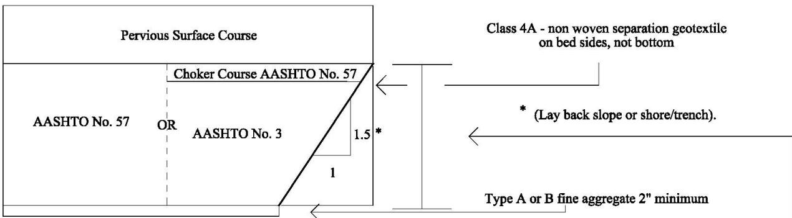

Subbase
The subbase is a highly permeable granular layer placed directly on a properly prepared subgrade to create a uniform, compacted platform that compensates for insufficient bearing capacity and stabilizes the foundation [1][2]. By maximizing longitudinal slope and providing large inter‑particle voids, it rapidly conveys water by gravity, protecting the subgrade from moisture‑induced loss of support such as erosion, pumping, frost heave, rutting and premature cracking while preserving bearing capacity [1][2]. Typically six inches thick of unbound aggregate (e.g., No. 2A or open‑graded OGS) is compacted to near‑maximum dry density over a Class 4 geotextile when required, and the layer must remain traffic‑free until proof‑rolling confirms stability [1][2]. In structural analysis its stiffness is combined with the base using weighted loss‑of‑support factors, and a drainage coefficient of 1.1 may be applied when a permeable treated base and underdrain system provide positive drainage [1][2].
PennDOT publications covering “Subbase” also include the following subtopics: 2A Subbase.
The 2A Subbase serves as the specific granular material that fulfills the subbase role by providing a uniformly compacted foundation on prepared subgrade or Class 4 Type A geotextile. [1][2] The layer contributes to the effective modulus of subgrade reaction through weighted-average loss-of-support calculations and requires retesting if exposed for more than sixty days to preserve its drainage and load-bearing performance. [1][2]
Sub-concepts (1)
Purpose and design objectives
The subbase is employed to compensate for an unstable or insufficiently supportive native subgrade that would otherwise jeopardize pavement performance, addressing the fundamental deficiency of a subgrade lacking reliable bearing capacity. [1][2] By providing a highly permeable granular layer directly on the subgrade, the subbase rapidly conveys water away through gravity drainage and maximizes the slope of this layer to further accelerate flow, thereby protecting the subgrade from moisture‑induced loss of support such as erosion, pumping, frost heave, rutting, and premature cracking. [1][2] The removal of water preserves the subgrade’s bearing capacity and increases the resistance of the overlying base to traffic‑induced deflections. [1] In addition, the subbase creates a uniform, compacted platform that prevents migration of fine particles into the base and surface courses, maintaining their integrity. [2][1] The guides require correction of all identified subgrade deficiencies before placement, prohibiting installation on soft, muddy, frozen, or otherwise weak ground, and mandating removal and replacement where instability is detected, ensuring a stable load‑bearing foundation. [2] Typical designs use an unbound granular material with a thickness commonly specified as six inches, which can be combined with treated permeable base or dense asphalt base to achieve the required modulus values for the anticipated traffic demand and design life. [1] The effective stiffness of the pavement system is obtained by combining the k‑values of the base and subbase and applying a loss‑of‑support factor to account for potential erosion or pumping, allowing designers to balance structural performance with material usage. [1] When geocells or geotextiles are incorporated, the subbase must be overfilled so that its compacted surface extends at least one inch above the reinforcement and the drop height of the placed material is limited to three feet, protecting the reinforcement from construction traffic and heat. [2] The subbase must remain free from traffic until it has been proof‑rolled and demonstrated stable; exposure longer than sixty days triggers retesting and any defective sections are removed and the underlying subgrade repaired. [2] Integration with underdrain systems and maintenance of a positive slope further enhances drainage, reflected in a higher drainage coefficient (C_d = 1.1) used for performance prediction. [1]
[1] — Ch. 2 (pp. 58–59), Ch. 8 (pp. 160–167); [2] — SECTION 200 EARTHWORK (pp. 168–188), SECTION 300 BASE COURSES (pp. 226–227)
The subbase is required to function as a highly permeable layer that rapidly conveys water away by gravity, which is achieved by maximizing longitudinal slope and providing large inter‑particle voids that inhibit capillary rise. In addition, it must serve as a uniform load‑bearing platform that supports the overlying base and surface courses while shielding any underlying geotextile from intrusion of fines. Structurally the subbase shall be placed on a properly prepared subgrade and, when used with a Class 4 geotextile, must have a minimum thickness of six inches before compaction, with elevation controlled within half‑inch tolerances. Each lift may not exceed six inches (or one to two inches above the height of expanded geocell cells when such cells are employed) and must be compacted to a non‑movement condition. Density requirements are location dependent, requiring compaction to at least 97 % of maximum dry density for embankment foundations or deep subgrades and to 100 % for structure foundations, subgrades, or material within three feet of the proposed grade, while moisture content must be maintained between minus 3 % and optimum. A modest reduction in permeability may be accepted where necessary to achieve sufficient workability and load‑bearing capacity, provided that drainage performance remains adequate. Durability is ensured by keeping the subbase dry, which preserves the support from the underlying subgrade and prevents moisture‑induced distresses such as rutting, cracking and frost heave, thereby protecting long‑term pavement performance. Positive longitudinal slope must be maintained to promote drainage, and shoving or wave motion under rollers is prohibited to avoid segregation of the granular material. The subbase must be covered within two weeks of placement to protect the geotextile, and any exposure during winter shutdowns requires immediate covering with an asphalt base or cement concrete. When No. OGS aggregate is used, traffic—including construction traffic—must be prohibited on the subbase, and if No. 2A aggregate serves as a haul road or remains exposed for more than sixty calendar days it must be retested for surface irregularities and depth with deficiencies corrected; winter exposure likewise mandates covering before shutdown. Proof rolling is mandatory prior to placement of the final pavement, and any indication of instability during proof roll requires removal of the subbase, repair of the subgrade, and replacement of the material. Safety provisions include prohibiting equipment contact with the geotextile until it is fully covered, limiting wheel penetration into the subbase to a maximum of one‑half inch, restricting drop height of placed material to three feet, and recompacting any surface disturbance with small vibratory compactors; material disturbed more than one inch must be removed and replaced with concrete at no additional cost. Serviceability criteria limit permanent deflection or rutting to no more than a half‑inch for existing subgrade and one inch for raised embankments, require prompt filling of wheel ruts to retain the designed profile, and demand that the subbase remain essentially undisturbed during repair work so that functional, structural, durability, safety and serviceability performance are preserved throughout the pavement life. For high‑traffic facilities such as Interstates where projected equivalent single axle loads exceed five million ESALs, the subbase may only be credited toward structural capacity if its condition and drainage capability have been verified by investigation; otherwise it is excluded from the structural evaluation of an overlay. [1][2]
[1] — Ch. 2 (pp. 58–59), Ch. 8 (p. 160), Ch. 10 (p. 180); [2] — SECTION 200 EARTHWORK (pp. 163–188), SECTION 300 BASE COURSES (pp. 226–227), SECTION 500—RIGID PAVEMENTS (pp. 405–421)
Scope and applicability
Subbase is appropriate beneath both rigid and flexible pavements, including shoulders, provided the subgrade has been properly prepared and soft, muddy or frozen zones are avoided [1][2]. For rigid pavement such as Jointed Plain Concrete Pavement, Roller Compacted Concrete, and other concrete pavements on interstates and expressways, a permeable base layer (asphalt or cement‑treated) is placed over a 2A subbase, which may also serve as the primary base in rehabilitation projects that originally used open‑graded subbase, ATPB or CTPB, provided positive outlet drainage can be achieved [1]. In new construction or reconstruction where a treated permeable base or dense asphalt base over unbound aggregate is employed together with an underdrain system ensuring positive drainage, the subbase may be included and a drainage coefficient Cd = 1.1 applied in life‑cycle calculations [1]. Low‑volume local and collector roads (average daily traffic ≤ 2 000) that use roller‑compacted concrete typically incorporate a six‑inch unbound granular subbase beneath the slab to meet structural support requirements for a design life of twenty years with a 1 % annual traffic growth rate [1]. For flexible‑pavement overlays on non‑interstate highways, a subbase may be included in the structural analysis when projected 18‑kip ESALs are below five million and site investigations confirm acceptable material quality and drainage; on interstates or where ESALs exceed five million without verified subbase condition, the subbase is excluded from overlay design [1]. Open‑graded subbase is prohibited for new concrete pavements; only asphalt or cement‑treated permeable bases are allowed when a drainage layer is required [1]. The typical aggregate placement for both rigid and flexible pavement calls for a minimum compacted depth of three inches of No. 2A aggregate directly on the subgrade, topped by at least four inches of No. OGS aggregate, with uniform layers not exceeding eight inches in compacted thickness (or four inches when granulated slag is used), each compacted to a non‑movement condition before paving proceeds [2]. A Class 4 Type A geotextile must be installed as specified before placing the subbase, with at least two‑foot overlap and no wrinkles, and the fabric is back‑dumped with subbase material to full design depth prior to any traffic or construction loads [2]. When No. OGS aggregate is used, it must consist of durable gravel containing a minimum of seventy‑five percent three‑face crushed particles; granulated slag may be incorporated provided it meets size, density and purity limits and does not exceed twenty percent by mass of non‑slag material, while steel‑slag aggregate is expressly prohibited [2]. No traffic, including construction traffic, is permitted on a subbase constructed of No. OGS aggregate; if No. 2A aggregate is used as a haul road or the subbase remains exposed to weather for more than sixty days, it must be retested for surface irregularities and depth and any deficiencies corrected before final pavement placement [2]. Special rolling that reveals permanent deflection greater than half an inch up to three inches triggers excavation of the failed area, installation of a Class 4 geotextile on the prepared bottom, backfilling with borrow material, and placement of at least six inches of subbase before final compaction; this method is applied to embankment foundations, raised existing embankments, spread footings on soil and similar structures where subgrade stability must be assured [2]. When back‑filling excavated sections created during rubblizing of rigid concrete pavements, No. 2A subbase is placed in lifts not exceeding six inches and compacted until it no longer moves, providing a stable base for subsequent seating and overlay [2].
[1] — Ch. 8 (pp. 160–167), Ch. 10 (p. 180); [2] — SECTION 200 EARTHWORK (pp. 163–169), SECTION 300 BASE COURSES (pp. 226–227), SECTION 500—RIGID PAVEMENTS (pp. 420–421), SECTION 700 MATERIAL (pp. 636–639)
The use of a subbase is ruled out when the project involves concrete pavement because specifications prohibit open‑graded material, requiring instead a cement‑treated or asphalt permeable base [1]. Likewise, a drainage layer must be capable of delivering a positive outlet; if such an outlet cannot be guaranteed, designers replace the subbase function with a dense base equipped with longitudinal edge drains [1]. The structural suitability of a subbase also depends on its stiffness relative to the underlying roadbed, and the ratio of subbase modulus to roadbed resilient modulus may not exceed four; exceeding this limit forces an adjustment of layer composition or adoption of an alternative design [1]. When bedrock is encountered within ten feet of the subgrade surface over a significant length, its influence on the k‑value must be considered, often leading to selection of a different pavement approach [1]. If the project cannot provide a treated permeable base or a dense asphalt base over unbound aggregate together with an underdrain system that assures positive drainage, the subbase option is abandoned in favor of a design relying solely on unbound aggregate [1]. Rehabilitation projects where existing pavement has demonstrated poor drainage and no substantial drainage improvements are planned also call for an alternative without a subbase [1]. Existing subbases that are in poor condition, particularly on Interstate highways, are excluded from structural evaluation, prompting designers to depend on other layers or different design methods [1]. On non‑Interstate routes where a subbase is absent and projected traffic exceeds five million 18‑kip equivalent single axle loads, the subbase cannot be counted unless a dedicated investigation verifies its quality and drainability; otherwise an alternative design must be employed [1]. A subbase may not be placed when the existing subgrade cannot be brought to sound condition—specifically if it remains soft, muddy, or frozen—or when identified deficiencies have not been remedied, in which case another structural system is required [2]. The practicality of using a subbase diminishes once the required material volume exceeds 1,500 tons because such quantities trigger the need for a Subbase Delivery Plan that adds procedural complexity, leading designers to select a different approach [2]. Structural limits on layer thickness further restrict use; each compacted subbase layer may not exceed eight inches in depth, and only four inches when granulated slag is employed, preventing the provision of deeper support needed for heavily loaded sections [2]. Subbases constructed of No. OGS aggregate are prohibited from bearing any traffic, including construction traffic, making them unsuitable wherever traffic must traverse the layer [2]. When a No. 2A aggregate subbase is used as a haul road or remains exposed to weather for more than sixty calendar days, additional testing and corrective actions become mandatory, which again favors an alternative design [2]. Leaving a prepared subbase uncovered during winter shutdowns is prohibited; specifications require that an asphalt base course be placed over all prepared subbase before the end of the paving season, a requirement that may compel designers to adopt a different material or pavement configuration [2].
[1] — Ch. 8 (pp. 161–163), Ch. 10 (p. 180); [2] — SECTION 300 BASE COURSES (pp. 226–227)
Design inputs and requirements
The design of the subbase layer is directed by a combination of state highway construction standards and national pavement design procedures that together define material characteristics, geometric tolerances, drainage performance, and construction controls. State‑level specifications such as PennDOT Publication 72M require headwalls to protect drain outlets in mowable areas, while Publication 13M prescribes the sizing of pavement‑base drains and the spacing of their outlets, and both standards mandate that subbase material be highly permeable as demonstrated by gradation testing and that the subbase slope be maximized to promote gravity drainage. At the national level the 1993 AASHTO Pavement Design Procedures, implemented through the DARWin software, govern rigid‑pavement subbases by requiring inputs such as equivalent single axle loads, serviceability limits, concrete strength and modulus values, seasonal subgrade reaction coefficients of 15 000 psi for spring thaw, 30 000 psi for normal conditions and 50 000 psi for frozen conditions, and a drainage coefficient that is set to 1.0 for unbound aggregate but increased to 1.1 when a treated permeable base or dense asphalt base overlies the aggregate with an under‑drain system providing positive drainage; rehabilitation projects that retain existing drainage revert to the standard value of 1.0. The procedures also require that the ratio of subbase modulus to roadbed soil resilient modulus not exceed four and that loss‑of‑support factors be applied when determining the weighted k‑value. For Interstate and Expressway rigid pavements the specifications further require a structural base consisting of an asphalt or cement‑treated permeable base placed over a No. 2A subbase, explicitly prohibiting the use of open‑graded subbase in any concrete pavement project. Local and collector road reinforced‑concrete designs incorporate a six‑inch unbound granular subbase whose thickness is used together with assumed twenty‑year service life, one percent annual traffic growth, and PennDOT subgrade resilient modulus values derived from CBR to satisfy performance criteria such as limiting slab cracking to fifteen percent at the end of design life. Project constraints for overlay designs limit the use of existing subbase on Interstates by omitting it from structural evaluation because of potential poor condition, and on non‑Interstate routes the subbase is excluded when projected 18‑kip ESALs exceed five million unless a specific investigation confirms acceptable quality and drainage. Prior to placement the subgrade must be prepared in accordance with Section 210 so that it is firm and free of soft, muddy or frozen conditions, and when more than 1 500 tons of subbase material are required a Subbase Delivery Plan must be submitted for review. Elevation and depth of the placed subbase are limited to plus‑or‑minus one‑half inch, and construction is performed in lifts not exceeding eight inches in compacted thickness, reduced to four inches when granulated slag is used; however, where fully compacted as permitted by Section 206.3(b) lifts may be up to six inches. All compaction must achieve the non‑movement condition defined in Section 206.3(b), and proof rolling is required after winter exposure without a protective asphalt or concrete layer. Only hard, durable, inert coarse aggregate that meets the criteria of Section 703.2 may be used, with No. 2A aggregate specified for most applications; this material must satisfy absorption and durability limits and contain at least seventy‑five percent crushed particles with three fracture faces when employed as open‑graded subbase, while granulated slag is permitted only under the conditions of Section 350. A Class 4 Type A geotextile shall be placed on selected borrow before backfilling, and no equipment may travel on the fabric until it is fully covered by at least six inches of subbase. Placement must be performed by back‑dumping and spreading ahead of equipment to the full design depth while maintaining a positive slope for drainage; wheel ruts must be filled, the drop height of the material shall not exceed three feet, and when geocells are used the compacted surface must extend at least one inch above the cell top with lift thickness allowed up to two inches greater than the cell height for cells taller than six inches. Construction traffic is barred from open‑graded subbase, and any No. 2A subbase used as a haul road or left exposed for more than sixty calendar days must be retested for surface irregularities and depth with corrective actions applied as specified. The finished subbase surface must be firm, even and shaped within plus‑or‑minus one‑half inch of grade and contour; disturbances less than one inch are to be recompacted with small vibratory compactors, while disturbances greater than one inch require removal of the affected material and replacement with concrete at no additional cost. Before the end of the construction season the subbase must be covered by the specified asphalt base course for flexible pavements or reinforced/plain cement concrete for rigid pavements, and if winter exposure occurs without such protection a proof roll is required prior to placement of the final pavement. [1][2]
[1] — Ch. 2 (pp. 58–59), Ch. 8 (pp. 160–167), Ch. 10 (p. 180); [2] — SECTION 200 EARTHWORK (pp. 163–188), SECTION 300 BASE COURSES (pp. 226–227), SECTION 500—RIGID PAVEMENTS (pp. 405–435), SECTION 700 MATERIAL (pp. 636–639)
Design methods and criteria
The subbase is defined by selecting a highly permeable granular material whose particle‑size distribution serves as the primary indicator of permeability [1]. Once selected, the layer is shaped to achieve the greatest practical slope so that gravity can rapidly drain water through the aggregate, a practice also emphasized in construction guidance that requires maintaining a positive slope for drainage during placement [1][2]. Pavement base drains and outlet spacing are laid out according to the procedure set forth in PennDOT Publication 13M Design Manual Part 2 Chapter 10 Section 10.3.D, providing the required drainage capacity for the subbase‑base system [1]. For structural analysis the subbase is treated jointly with the base layer and a weighted‑average loss‑of‑support factor is computed from the depths of each layer using the expression LS₁·D₁/(D₁+D₂)+LS₂·D₂/(D₁+D₂) [1]. The resulting effective subgrade reaction modulus (k‑value) is then adjusted by selecting a base elastic modulus of 15,000 psi for spring‑thaw conditions, 30,000 psi for normal summer/fall conditions, or 50,000 psi for frozen winter conditions, while also ensuring that the ratio of subbase to soil resilient modulus does not exceed four [1]. Different effective k‑values are generated for each subbase type and depth, with further modifications applied when the pavement lies close to a rigid foundation [1]. In reinforced concrete pavement design for low‑volume roads the subbase is incorporated through the American Concrete Pavement Association’s StreetPave12 software, which assumes a six‑inch unbound granular layer in combination with the subgrade and employs an empirical resilient‑modulus model that defines MRSG as 1,500 times the CBR value to calculate concrete slab thickness for a twenty‑year design life [1]. The construction sequence begins with preparation of the existing subgrade in accordance with Section 210 before any subbase material is placed [2]. A Subbase Delivery Plan must be prepared and submitted when directed, and berms are erected to confine the material while a Class 4 Type A geotextile is installed, overlapping adjacent rolls by at least two feet, kept free of wrinkles, and covered until the subbase is fully placed [2]. Any soft, wet or otherwise unsuitable subgrade or previously placed subbase must be removed prior to placement [2]. The design depth is achieved by back‑dumping the selected aggregate—typically No. 2A coarse aggregate or granulated slag—and spreading it ahead of equipment to a uniform thickness while maintaining the positive slope required for drainage [2]. Layers are limited to no more than eight inches in compacted depth, reduced to four inches when granulated slag is used, with minimum compacted depths of three to four inches depending on aggregate type, and at least six inches of subbase must be placed on the geotextile after an underlying minimum of eight inches of approved fill [2]. Compaction is performed from the sides toward the centre until a non‑movement condition specified in Section 206.3(b) is reached, using the methods described in Section 350.3, and wheel ruts that develop are filled with additional subbase rather than being bladed level [2]. After each lift the finished thickness is measured and any deviation of half an inch or more triggers corrective scarifying, while the final surface must be shaped to a firm, even plane within plus‑or‑minus one‑half inch of the intended grade and contour [2]. Disturbances are limited to a maximum wheel penetration of one‑half inch; if damage exceeds one inch the affected material is removed and replaced with concrete at no extra cost, whereas lighter disturbances are remedied by re‑compacting with small vibratory compactors [2]. No analytical equations, empirical models or software design tools are prescribed for subbase design in the construction guidance, which relies solely on adherence to these procedural and thickness/compaction criteria [2].
The following figure illustrates a pervious system design that embodies these drainage and structural principles.

The diagram illustrates the cross-sectional design of a Pervious Surface Course. The top layer is labeled "Pervious Surface Course." Below this, there are two options for the base material: either "AASHTO No. 57" or "Choker Course AASHTO No. 57" overlying "AASHTO No. 3."
The right side of the diagram details the slope and separation requirements. The slope is indicated as a ratio of 1.5 vertical to 1 horizontal, noted with an asterisk referring to "Lay back slope or shore/trench." A layer labeled "Class 4A - non woven separation geotextile" is specified for the bed sides but not the bottom. At the very bottom, there is a requirement for "Type A or B fine aggregate 2" minimum."
Text description of this figure
The diagram illustrates the cross-sectional design of a Pervious Surface Course. The top layer is labeled "Pervious Surface Course." Below this, there are two options for the base material: either "AASHTO No. 57" or "Choker Course AASHTO No. 57" overlying "AASHTO No. 3."
The right side of the diagram details the slope and separation requirements. The slope is indicated as a ratio of 1.5 vertical to 1 horizontal, noted with an asterisk referring to "Lay back slope or shore/trench." A layer labeled "Class 4A - non woven separation geotextile" is specified for the bed sides but not the bottom. At the very bottom, there is a requirement for "Type A or B fine aggregate 2" minimum."
The design specifies sloped sides and a minimum depth of fine aggregate, demonstrating the structural configuration used to maximize longitudinal slope for rapid water conveyance.
[1] — Ch. 2 (pp. 58–59), Ch. 8 (pp. 161–167); [2] — SECTION 200 EARTHWORK (pp. 163–169), SECTION 300 BASE COURSES (pp. 226–227), SECTION 500—RIGID PAVEMENTS (pp. 405–435)
The subbase shall consist of a highly permeable granular material that rapidly conveys gravity‑drainable water and possesses voids large enough to prevent capillary rise, while its longitudinal slope is maximized to increase drainage rate and any drain outlets located in mowable areas are protected by appropriate headwalls. [1] Lateral underdrains are encouraged at wet subgrade locations or cut‑to‑fill transitions to assure reliable water removal. [1] Prior to placement, the subgrade must be properly prepared by removing all soft, wet, or otherwise unsuitable material and eliminating any existing open‑graded subbase before new aggregate is installed. [2] A Class 4 Type A geotextile is required beneath the subbase, and a minimum of six inches of subbase material must be placed on this fabric prior to compaction. [2] The aggregate used shall be hard, durable coarse material free of deleterious substances; when designated as open‑graded subbase, at least seventy‑five percent of the particles must be crushed with a minimum of three fracture faces and water absorption may not exceed three percent for Type A applications or three point five percent for Type B, as verified by AASHTO testing. [2] Layer thicknesses are limited to eight inches compacted depth in general, with slag layers not exceeding four inches and a full‑depth compaction permitted up to six inches when required; within each aggregate course No. 2A material must achieve at least three inches of compacted depth and open‑graded subbase material at least four inches. [2] The finished surface elevation must be controlled within plus or minus one‑half inch of the design grade, and any deficiency greater than this tolerance is deemed defective and requires scarifying, re‑blending and recompaction. [2] Compaction density requirements depend on depth: when the subbase lies more than three feet below the proposed subgrade it must reach at least ninety‑seven percent of its maximum dry density, whereas within three feet of the subgrade or supporting structure foundations it must be compacted to one hundred percent of maximum dry density, with moisture content between minus three percent and optimum moisture content for each lift. [2] In structural analysis the subbase is treated together with the base course, applying a weighted‑average loss‑of‑support factor that reflects each layer’s thickness and LS value, and seasonal elastic moduli are prescribed as fifteen thousand psi for spring thaw, thirty thousand psi for normal summer/fall, and fifty thousand psi when frozen, subject to adjustment so that the ratio of subbase resilient modulus to the underlying soil does not exceed four. [1] Only asphalt or cement‑treated permeable bases may serve as drainage layers; open‑graded subbases are prohibited, and interstate and expressway designs specifically require a No. 2A subbase beneath an ATPB or CTPB layer. [1] The overall drainage coefficient Cd is set to 1.1 when a treated permeable base or dense asphalt base is placed over unbound aggregate together with an underdrain system and positive drainage, reverting to 1.0 when such measures are absent or in rehabilitation projects lacking significant drainage improvements. [1] A minimum six‑inch unbound granular subbase is mandated for reinforced concrete pavement designs that assume a twenty‑year service life, a one percent annual traffic growth, and define performance thresholds through terminal serviceability values of 2.5 for collector roads with a ninety‑percent reliability target and 2.0 for local roads with an eighty‑five‑percent reliability requirement. [1] Existing subbase on interstate projects is assumed non‑structural and excluded from the effective structural number calculation in overlay design because it may be in poor condition, and on non‑interstate routes the subbase is also omitted when projected 18‑kip ESAL traffic exceeds five million unless a specific investigation confirms adequate quality and drainage. [1] Traffic restrictions prohibit any traffic, including construction traffic, on open‑graded subbases; if No. 2A aggregate serves as a haul road or the subbase remains exposed to weather for more than sixty calendar days, it must be retested for surface irregularities and depth with deficiencies corrected. [2] During winter shutdowns the subbase cannot remain uncovered; a protective asphalt base course for flexible pavements or cement concrete for rigid pavements must be placed, otherwise proof‑rolling is required before pavement placement. [2] Disturbance of the subbase is limited to a maximum wheel saw penetration of one‑half inch; any surface disturbance shall be recompacted with small vibratory compactors, and if disturbance exceeds one inch the affected material must be removed and replaced with concrete at no additional cost to the Department. [2] When placed in expanded geocell cells the subbase must be overfilled so that the compacted surface lies at least one inch above the cell top, drop heights may not exceed three feet, anchors must extend a minimum of twelve inches below the cell bottom, and for cell heights greater than six inches the lift thickness may be one to two inches greater than the cell height while still complying with the specified requirements. [2]
[1] — Ch. 2 (pp. 58–59), Ch. 8 (pp. 161–167), Ch. 10 (p. 180); [2] — SECTION 200 EARTHWORK (pp. 163–188), SECTION 300 BASE COURSES (pp. 226–227), SECTION 500—RIGID PAVEMENTS (pp. 405–435), SECTION 700 MATERIAL (pp. 636–639)
Structural section and dimensions
The subbase shall be constructed as an unbound granular layer typically six inches thick for reinforced concrete pavement designs. Across the guides the overall finished depth of the subbase is required to be within one‑half inch of the design elevation; otherwise remedial scarification and recompaction are mandated. When placed in lifts, each compacted lift may not exceed eight inches in thickness, but if granulated slag is used the lift thickness is limited to four inches, although a single six‑inch lift is permissible provided the entire layer is compacted as specified. A minimum of three inches of compacted No 2A aggregate must be placed directly on the prepared subgrade, followed by at least four inches of compacted No OGS aggregate; this sequence applies to both rigid and flexible pavements as well as shoulders. If a geotextile is installed over an undercut backfill, the subbase must be laid to a minimum thickness of six inches before compaction. When the subbase is placed within expanded geocell cells it must be overfilled so that the compacted surface extends at least one inch above the top of the cell, and where the cell height exceeds six inches the lift may be permitted to be one to two inches thicker than the cell. Wheel cuts into the subbase are limited to a maximum penetration of one‑half inch, and any disturbance greater than one inch must be removed and replaced with concrete during paving. When a supported edge such as a curb and gutter or a widened lane is incorporated, the required reinforced concrete pavement slab thickness may be reduced by one inch relative to the minimum depth shown in design tables. The guides do not prescribe explicit dimensions for the base course, treated‑soil layer, shoulder width, edge support, or reinforcement; those items are left to design tables or project‑specific specifications. [1][2]
[1] — Ch. 8 (pp. 166–167); [2] — SECTION 200 EARTHWORK (pp. 163–188), SECTION 300 BASE COURSES (pp. 226–227), SECTION 500—RIGID PAVEMENTS (pp. 405–421)
Materials and mixture design
The subbase shall be characterized by the material type, prescribed thickness, a loss‑of‑support factor where erosion or pumping is possible, and an elastic modulus that will be used for design calculations. Unbound granular subbases are typically constructed from No. 2A coarse aggregate, which must be placed directly on the prepared subgrade and compacted to at least three inches of depth. When a higher‑capacity open‑graded layer is required, an Open‑Graded Subbase (No. OGS) shall be placed over the No. 2A layer to achieve a minimum compacted thickness of four inches. The OGS material must consist of at least 75 % crushed particles, each exhibiting a minimum of three fracture faces, and must meet general durability and cleanliness criteria of hard, tough particles free of deleterious substances. Granulated slag may be used in place of OGS only if it conforms to strict limits: no more than twenty percent by mass of non‑slag material, a dry rodded density not exceeding eighty pounds per cubic foot as determined by AASHTO T 19, a maximum particle size of fifty millimetres (two inches), and fine content limited to twenty percent passing the No. 100 sieve; steel slag and recycled concrete are excluded. The moisture content of all subbase mixes shall be sufficient to keep the material cohesive and to prevent segregation during stockpiling, hauling, and placement, thereby minimizing additional water required for compaction. Placement shall be carried out in lifts whose compacted depth does not exceed eight inches; when granulated slag is used each lift shall be limited to four inches. The overall subbase thickness shall be at least six inches before final compaction, a requirement that also applies when the layer rests on a Class 4 Type A geotextile. For treated bases such as ATPB or CTPB, the designer must assign an appropriate loss‑of‑support factor to adjust the effective k‑value for potential erosion or pumping and shall provide the elastic modulus to be used under the relevant seasonal condition. The specified elastic modulus of the subbase shall be compared with the resilient modulus of the underlying soil, and the ratio of subbase modulus to soil modulus shall not exceed four. Mixture proportions for ATPB or CTPB must follow the respective specifications rather than employing open‑graded mixes. The finished subbase surface shall be firm and even, with grade and contour within plus or minus one‑half inch of the required elevation, and any soft, wet, or otherwise unsuitable material encountered in the subgrade or existing subbase must be removed prior to placement. [1][2]
[1] — Ch. 8 (pp. 161–167); [2] — SECTION 200 EARTHWORK (pp. 163–165), SECTION 300 BASE COURSES (pp. 226–227), SECTION 500—RIGID PAVEMENTS (pp. 420–435), SECTION 700 MATERIAL (pp. 636–639)
The selection and proportioning of sub‑base materials begins with classifying the intended sub‑base type because each type provides a characteristic elastic modulus that contributes directly to the pavement’s effective k‑value [1]. For rigid pavements the preferred configuration is an asphalt or cement‑treated permeable base placed over a 2A sub‑base, and the combined layer is assigned elastic moduli of about 15 000 psi during spring thaw, 30 000 psi under normal conditions, and 50 000 psi when frozen [1]. Designers compute an overall support factor by weighting the thicknesses of the individual layers with a loss‑of‑support (LS) factor that reflects potential erosion or pumping; this weighted average guides the choice of the most economical thickness while still satisfying structural requirements [1]. The modulus of the selected sub‑base must be kept within a ratio of four to the resilient modulus of the underlying roadbed soil, preventing an overly stiff interface [1]. In parallel, material quality criteria require that the aggregate be hard, durable, inert coarse aggregate essentially free of clay, silt, vegetation and deleterious substances [2]. For open‑graded sub‑base mixes at least 75 % of the particles must be crushed with a minimum of three fracture faces to ensure interlock and load transfer, a condition that also supports the desired permeability and bearing capacity [2][1]. Aggregate absorption shall not exceed 3.0 % for Type A applications or 3.5 % for Type B applications as determined by AASHTO T 85, providing durability against moisture‑induced loss of strength [2]. When granulated slag is used, it must be sized no larger than 50 mm, contain no more than 20 % non‑slag particles, and pass less than 20 % of the 150 µm sieve; steel slag is expressly excluded from sub‑base use [2]. Highly permeable granular mixes are specified so that water can move freely through the voids and be removed by gravity, with larger inter‑particle spaces also suppressing capillary suction that could otherwise draw moisture upward into the pavement structure [1]. Particle‑size gradation is employed in the field as a practical proxy for permeability, following standards such as those used by PennDOT to guide selection [1]. Although maximum drainability is desirable for durability and performance, designers may intentionally reduce it to obtain a more stable work platform for construction equipment, especially when a coarser mix provides better bearing capacity [1]. The sub‑base is placed on the steepest feasible slope to accelerate gravity drainage, and where open‑graded material cannot achieve positive drainage, dense bases equipped with edge drains are specified instead [1]. By balancing high permeability for durability and performance against sufficient stiffness, stability, and constructability—through gradation criteria, thickness optimization, LS adjustments, modulus ratio limits, and strict aggregate quality specifications—the final mixture satisfies the structural, durability, constructability, and overall performance requirements of pavement design [1][2].
[1] — Ch. 2 (pp. 58–59), Ch. 8 (pp. 161–162); [2] — SECTION 700 MATERIAL (pp. 636–639)
Structural details and interfaces
The subbase layer may be installed either in expanded geocell cells or directly over a Class 4 Type A geotextile, and the required joints, reinforcement, load‑transfer connections and transition geometry are defined by the specifications. When geocells are employed, each cell must be anchored so that the anchor extends at least twelve inches below the bottom of the geocell; if anchoring is impractical an installation frame may be used instead. Adjacent geocell panels are aligned and their perimeter‑cell welded ends overlapped, after which mechanical fasteners prescribed by the manufacturer secure the panels in direct contact until pavement placement begins. The cells are then overfilled so that, after compaction, the top of the subbase surface lies at least one inch above the geocell crown. Where a geotextile is used, the fabric is laid on the prepared subgrade and must be overlapped a minimum of two feet between adjacent rolls. Steel pins, as detailed in Section 212.2, may be driven to hold the fabric against wind uplift before back‑filling. No equipment rides directly on the geotextile during placement; the subbase material is spread and compacted to the designed depth following the compaction criteria of Section 350.3 while a positive slope for drainage is maintained. A minimum thickness of six inches of subbase must be placed and compacted over the geotextile, and at locations where an undercut begins or ends the elevation change is limited to an eight‑horizontal‑to‑one‑vertical (8H:1V) transition slope. No additional joints, reinforcement elements, or load‑transfer devices are required beyond the geotextile layer and the prescribed transition geometry. [2]
[2] — SECTION 200 EARTHWORK (pp. 163–188)
In subbase design the interface with the underlying subgrade is treated as a distinct construction item that must be capable of supporting the compaction loads imposed by the over‑lying reinforced cement concrete pavement during placement, and the suitability of both subgrade and subbase is verified in the design phase to ensure each layer can sustain the required compaction without excessive deformation. When the subbase underlies a base course, the two layers are considered as a single composite for determining the effective modulus of subgrade reaction; their individual thicknesses are summed and a weighted‑average loss‑of‑support factor is computed using the LS values and depths of each layer. The selected subbase material must be compatible with the drainage function required by the pavement, allowing only asphalt‑treated porous base or cement‑treated porous base to serve as a drainage layer while prohibiting open graded subbase, and if positive outlet drainage cannot be achieved through the subbase a dense base equipped with longitudinal edge drains must be provided. Seasonal elastic moduli for the combined base‑subbase system are prescribed at 15 000 psi during spring thaw, 30 000 psi under normal conditions, and 50 000 psi when frozen, and the ratio of the subbase modulus to the resilient modulus of the roadbed soil must not exceed four. For shoulder sections that incorporate control joints in the RCC slab, joint spacing and alignment are required to match those of the adjoining concrete mainline so that continuity is maintained across the interface. The subbase interface begins with a uniformly compacted subgrade onto which a Class 4 Type A geotextile is laid flat, free of wrinkles, and extended beyond the planned coverage; adjacent sheets are overlapped at least six inches, or two feet where additional stabilization is required, and the fabric must be protected from exposure for more than two weeks before it is covered with subbase material. Berms are constructed to confine the fill, and any edges of the subbase that are narrower than the full pavement width are neatly trimmed before adjoining layers are placed. When geocell reinforcement is used, each panel is positioned so that its perimeter extends a minimum of six inches beyond the cell edge, adjacent panels overlap by at least twelve inches and welded ends are aligned, while anchors are driven to extend at least twelve inches below the bottom of the geocell to secure the cells in direct contact until pavement placement. The cells are back‑filled with subbase material in lifts not exceeding six inches; the fill is over‑filled so that the compacted surface rises at least one inch above the top of the geocell and the drop height of the material is limited to three feet, and a minimum of six inches of approved subbase must be placed on the geotextile before compaction begins. Compaction proceeds from the sides toward the centre with overlapping roller passes, maintaining a continuous stretch of at least 1,500 linear feet ahead of the next pavement course, following the criteria that avoid shoving or wave motion under the roller and continuing until no movement is observed. Transition zones at the start and end of any undercut are formed with slopes not steeper than an eight‑horizontal‑to‑one‑vertical ratio to promote drainage and protect existing underground utilities. The final interface between the rubblized pavement and the overlying surface must exhibit a vertical deflection of less than three‑quarters of an inch; any area exceeding this limit is undercut, removed, and re‑stabilized, while throughout these operations adjacent structures such as bridges, decks, drainage features, and utilities are protected and repaired if damaged. [1][2]
[1] — Ch. 4 (pp. 98–99), Ch. 8 (pp. 161–162); [2] — SECTION 200 EARTHWORK (pp. 163–188), SECTION 300 BASE COURSES (pp. 226–227), SECTION 500—RIGID PAVEMENTS (pp. 420–421)
Drainage, environment, and accessibility
The subbase shall be constructed from a highly permeable granular material that allows gravity‑driven water flow and avoids capillary retention, providing the primary means of drainage within the pavement structure. [1] Its surface is required to be sloped as steeply as practicable to accelerate runoff, and a minimum positive slope of ¼ inch per foot must be maintained throughout the layer to direct water away from the pavement. [1][2] Where wet subgrade conditions or cut‑to‑fill transitions exist, lateral underdrains are installed beneath the subbase, extending sufficiently to drain the area and set on at least a ¼‑inch‑per‑foot slope, with outlet ends kept open through construction until final shoulder acceptance. [1][2] Drain outlets associated with the subbase must be protected against crushing or plugging so that long‑term drainage capacity is retained. [1] The design also calls for a geotextile (Class 4 Type A) placed over any undercut and confined by berms, which may be backfilled with No. 57 aggregate where additional drainage paths are required; equipment may not contact the fabric until it is fully covered, and the fabric cannot remain uncovered for more than two weeks to limit moisture intrusion. [2] Subgrade drains are installed after subgrade preparation but before subbase placement, and they must be extended a length sufficient to adequately drain the wet area. [2] The subbase material must retain enough water to prevent segregation during handling yet be kept well‑moistened from delivery through compaction, with moisture content controlled between minus three percent of optimum and the optimum value; excess water is removed by drying methods such as disking or scarifying before final placement. [2] A minimum six‑inch layer of subbase is placed over the geotextile and compacted to the densities specified, while maintaining the required moisture range. [2] Seasonal variations in moisture and temperature are accommodated by assigning elastic moduli of 15 kpsi for spring‑thaw conditions, 30 kpsi for normal summer/fall conditions, and 50 kpsi for frozen winter conditions; if the ratio of subbase resilient modulus to that of the underlying soil would exceed four, the modulus is reduced and a loss‑of‑support factor applied to account for potential erosion or pumping caused by moisture changes. [1] Drainage layers shall be provided with permeable bases such as asphalt‑treated porous base (ATPB) or cement‑treated porous base (CTPB), while open‑graded subbase is prohibited; where a positive outlet can be achieved, a dedicated drainage layer is used, otherwise a dense base with edge drains must be employed. [1] For new rigid‑pavement projects the subbase consists of a treated permeable base or a dense asphalt base placed over unbound aggregate and includes an underdrain system that provides positive drainage; when this configuration is provided the overall drainage coefficient used in design (C_d) is increased to 1.1 to reflect superior moisture control, whereas projects lacking such treatment retain the default coefficient of 1.0. [1] To protect the subbase from adverse climatic exposure, especially winter, it may not be left exposed; an asphalt base for flexible pavements or reinforced/plain cement concrete for rigid pavements must be placed over the prepared subbase before the construction season ends, and if such protection is absent a proof roll is required with any unstable zones repaired at no extra cost. [2] When a No. 2A aggregate subbase serves as a haul road or remains exposed to weather for more than 60 calendar days, it must be retested for surface irregularities and depth and corrected according to the specified sections. [2] In overlay designs the existing subbase is assumed to provide adequate drainage and all drainage coefficients are set to 1.0; consequently the subbase may be omitted from structural evaluation on Interstates unless a specific investigation confirms its quality and drainability, while on non‑Interstate facilities with design traffic exceeding five million 18‑kip ESALs it may also be excluded unless verified. [1]
[1] — Ch. 2 (pp. 58–59), Ch. 8 (pp. 161–163), Ch. 10 (p. 180); [2] — SECTION 200 EARTHWORK (pp. 163–169), SECTION 300 BASE COURSES (pp. 226–227), SECTION 600 INCIDENTAL CONSTRU… (p. 512)
Subbase layers shall be constructed with a maximized longitudinal slope and using highly permeable granular material to promote rapid gravity drainage, thereby preserving structural support and preventing surface undulations that would degrade ride quality for users. Drainage outlets located in mow‑able areas must be protected by appropriate headwalls to ensure safe maintenance access and to prevent blockage or crushing of the drainage system. No traffic, including construction vehicles, is permitted on a subbase constructed of No. OGS aggregate, providing essential safety for workers and equipment. When a subbase built with No. 2A coarse‑aggregate serves as a haul road or remains exposed to weather for more than sixty calendar days, it must be retested for surface irregularities and depth, and any deficiencies corrected before further construction activities. The subbase may not remain uncovered during winter shutdowns; prior to the end of the construction season an asphalt base course for flexible pavements or reinforced/plain cement concrete for rigid pavements must be placed over the prepared subbase, and if it is left uncovered a proof roll is required before pavement placement. All soft, wet, or otherwise unsuitable material—including any existing OGS—must be removed from the area before placing the subbase to ensure a stable foundation. A layer of No. 2A coarse aggregate is then placed and compacted in accordance with the specified sections, producing a firm, even surface that conforms to the design grade and contour within a tolerance of plus‑or‑minus one‑half inch. When the subbase is installed beneath geocell reinforcement, each cell must be overfilled so that the compacted surface lies at least one inch above the top of the geocell, while the drop height of fill shall not exceed three feet to avoid damaging the cells. Adjacent geocell panels are required to overlap a minimum of twelve inches laterally and extend six inches beyond the perimeter, and anchors must protrude at least twelve inches below the bottom of the geocell; if cell height exceeds six inches, compaction lifts may be one to two inches thicker than the cell height. The subbase also supports a geotextile layer that must be protected by providing a positive slope for drainage, overlapping adjacent rolls by at least two feet, and ensuring the fabric is not exposed for more than two weeks; no equipment may travel on the geotextile until the subbase has been placed to its full design depth. Back‑dumping and spreading of the subbase material ahead of all equipment is required to maintain the intended profile and to facilitate safe access during construction. [1][2]
[1] — Ch. 2 (pp. 58–59); [2] — SECTION 200 EARTHWORK (pp. 168–188), SECTION 300 BASE COURSES (p. 227), SECTION 500—RIGID PAVEMENTS (pp. 428–435)
Verification and expected performance
After the subbase material has been placed, verification begins by confirming that the required geotextile is present and that at least six inches of aggregate rest on it before any compaction. The moisture condition of the layer is measured in‑place and must lie between three percent below optimum and optimum moisture content; density is then checked with AASHTO T191 or 310, requiring a minimum of 97 % of maximum dry density for deeper embankment foundations and 100 % for structural foundations or subgrades within three feet. Compaction proceeds from the sides toward the centre with uniformly overlapping passes until a non‑movement condition is achieved. At each predetermined test station a full‑depth hole is excavated, and the finished elevation must be within plus or minus one‑half inch of the design grade; any deficiency of half an inch or more is declared defective, prompting scarification to three inches, blending with additional material, recompaction and retesting until the depth tolerance is met. Permanent deflection is measured and may not exceed a half‑inch for existing subgrade or one inch for embankment foundations, with excess requiring remedial stabilization. The finished surface must be firm, even, and conform to grade and contour tolerances of plus or minus one‑half inch, confirming constructability and performance criteria. If the subbase has been exposed to weather for more than sixty calendar days, used as a No. 2A haul road, or left over winter without an asphalt or concrete protective layer, it is retested for surface irregularities and depth; any unstable zones are removed, the underlying subgrade repaired, and a new subbase placed at no cost to the department. Traffic—including construction traffic—is prohibited on subbases constructed with No. OGS aggregate. When the subbase remains unprotected over winter, a proof roll is performed before placement of flexible or rigid pavement; any areas that show instability during this roll must be removed and the subgrade repaired prior to reinstalling the subbase. Acceptance is achieved only after all these checks confirm compliance with design thickness, moisture‑density requirements, elevation tolerances, deflection limits, and overall project specifications. [2]
[2] — SECTION 200 EARTHWORK (pp. 163–165), SECTION 300 BASE COURSES (pp. 226–227), SECTION 500—RIGID PAVEMENTS (pp. 428–435)
Related Concepts
References
- Pennsylvania Department of Transportation, "Pavement Policy Manual," Publication 242, May 2015 Edition, Change No. 10, 2025. [Online]. Available: https://www.pa.gov/content/dam/copapwp-pagov/en/penndot/documents/public/pubsforms/publications/pub-242/pub%20242%20change%2010.pdf
- Pennsylvania Department of Transportation, "Publication 408/2020 Specifications," Change No. 11, 2025. [Online]. Available: https://www.pa.gov/content/dam/copapwp-pagov/en/penndot/documents/public/pubsforms/publications/pub_408/408_2020/408_2020_11/408_2020_11.pdf